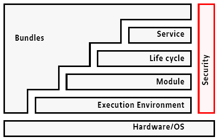

La Open Service Gateway initiative (OSGi) o OSGi Alliance è un consorzio non-profit fondato nel Marzo 1999 da produttori hardware e software con lo scopo di creare una piattaforma (middleware) che assicuri l'interoperabilità tra applicazioni e servizi forniti attraverso la rete. Essa promuove un ecosistema trasversale di sviluppatori di software e fornisce specifiche, implementazioni di riferimento, test suite e certificazioni.
Inizialmente, le specifiche OSGi erano mirate al campo della domotica (Home-Automation), in particolare alla costruzione di residential gateway efficienti. Successivamente i suoi campi di utilizzo si sono estesi ai più diversi settori, che vanno dalla telefonia mobile alle applicazioni per desktop (l'IDE Eclipse [GBG03] è forse il più famoso). Si contano diverse applicazioni anche nell'ambito dell'industria automobilistica, dell'automazione industriale e nello sviluppo di applicazioni server.
OSGi detta le specifiche di una architettura distribuita nella quale è possibile eseguire in maniera coordinata il deployment e la gestione remota dei servizi: la OSGi Service Platform. Tali specifiche definiscono un ambiente Component-Oriented e standardizzato per i servizi di rete, che è la base per un architettura Service-Oriented. In questa ottica OSGi può essere sinteticamente definito come un Universal Middleware che permette la creazione di software distribuibile in forma binaria per diverse piattaforme, in diverse industrie, e per diversi scopi.
Il componente principale delle OSGi specifications è rappresentato dal framework OSGi. Esso implementa un modello a componenti dinamico e fornisce un ambiente standardizzato, sicuro, modulare ed estensibile per l'esecuzione di applicazioni.
I mattoni per la costruzione delle applicazioni sono i bundle e possono essere installati, attivati, disattivati e disinstallati a run-time, anche in modo remoto e senza bisogno di riavviare il sistema.
Come evidenziato nella figura precedente, il framework si poggia sulla Java Virtual Machine, il che gli conferisce una totale indipendenza dalla piattaforma e la capacità di offrire ai bundle la possibilità di accedere direttamente alle risorse di sistema. Il framework OSGi è costituito da quattro livelli (o layer):

Esiste anche un altro livello trasversale e interagente con tutti gli altri: il Security Layer. Si basa sostanzialmente sul Java2 security model fornendo un sistema per firmare e verificare l'autenticità dei bundle; in più aggiunge i meccanismi e le primitive per una gestione dinamica dei permessi.
La disponibilità di implementazioni della macchina virtuale Java per diversi ambienti operativi è la chiave della portabilità di Java, proclamata nello slogan write once, run everywhere. La JVM (Java Virtual Machine) realizza infatti un ambiente di esecuzione omogeneo, che nasconde le specificità del sistema operativo sottostante. Per ovviare alle limitazioni computazionali dei moderni dispositivi (ad esempio cellulari e palmari) Java ha affiancato alla sua edizione standard ([J2SE]) una nuova edizione ridotta e configurabile a seconda del dispositivo su cui viene installata, la Java 2 Micro Edition (J2ME) [J2ME].
La introduzione di più tipi di macchina virtuale ha riaperto il problema della portabilità del software; OSGi lo affronta consentendo di specificare quale ambiente di esecuzione Java utilizzare per una specifica applicazione. OSGi permette di scegliere fra svariate configurazioni e profili quali ad esempio J2SE, CDC, CLDC, MIDP etc. Inoltre OSGi ha standardizzato un proprio ambiente di esecuzione basato su Fundation Profile [JME-FP] ed una sua variante, OSGi/Minimum-1.1 [OSGi/Min], che specifica l'ambiente di esecuzione minimo perché il framework OSGi possa funzionare
La piattaforma standard Java fornisce solo un supporto limitato al packaging e al deploying delle applicazioni e dei componenti. Ad esempio in Java non esiste un modo per esprimere la dipendenza di un file jar da altri file jar (la voce "Class-path" nel manifest non è un modo affidabile per esprimere tali dipendenze). Pertanto è impossibile stabilire se codice incapsulato in un file jar funzionerà a run-time oppure no, a causa della mancanza di parti contenute in altri file jar. Inoltre tutto il codice contenuto in un file jar è visibile all'esterno; si possono dichiarare nel codice delle classi private o protected, ma in tal modo tali classi risulterebbero non visibili all'interno dello stesso package.
Il Module Layer fornisce una soluzione generica e standardizzata per la gestione della modularizzazione del codice Java.
Nel Framework OSGi la gestione delle dipendenze e collaborazioni fra bundle avviene a due livelli: dipendenze dei bundle/package (Deployment Dependency) e dipendenze dei servizi (Service Dependency). Il Module Layer si occupa in particolare del primo tipo di dipendenze (si veda Deployment dependency ), mentre il Service Layer si occupa di fornire il supporto per la gestione del secondo (si veda Service Dependency ).
Il Life Cycle Layer si poggia sul Module Layer e sul Security Layer per fornire i meccanismi per gestire in maniera sicura il ciclo di vita dei bundle. Il Module Layer in parte si occupa di questo aspetto definendo l'architettura di class loading, ma non specifica come un bundle debba essere installato, aggiornato o disinstallato nè formalizza sistematicamente le fasi di vita di un bundle. (si veda Life cycle ).
Il Service Layer definisce un modello collaborativo e dinamico di tipo publish, find and bind (pubblica, torva e collega) che consente ai bundle sia di erogare i propri servizi, che di usufruire di quelli messi a disposizione dagli altri bundle, senza che nessuno di loro abbia conoscenza a priori degli altri. Questo livello dà alla piattaforma OSGi i connotati di una prima Service Oriented Architecture (SOA).
Il framework OSGi genera e gestisce una serie di eventi che descrivono il cambiamenti di stato dell'intero sistema. Esistono tre categorie principali di eventi:
I primi due tipi di eventi sono relativi al Life Cycle Layer e rappresentano rispettivamente: gli eventi relativi al cambiamento di stato di un bundle e quelli relativi alle modifiche del framework, ed agli eventuali errori. L'ultimo tipo di evento è relativo al Service layer; eventi di questo tipo vengono generati in caso di registrazione, cancellazione o modifica delle proprietà di un servizio.
Il framework definisce anche diversi tipi di listener che si occupano di catturare gli eventi e notificarli agli interessati. In particolare i BundleListener vengono attivati quando arriva un BundleEvent, quindi un cambiamento nello stato di un bundle (ad esempio se viene fatto partire un bundle), i FrameworkListener quando arriva un FrameworkEvent (che può segnalare errori, warning, refresh, ecc.) ed i ServiceListener quando arriva un Service-Event (ad esempio al momento della registrazione di un nuovo servizio).